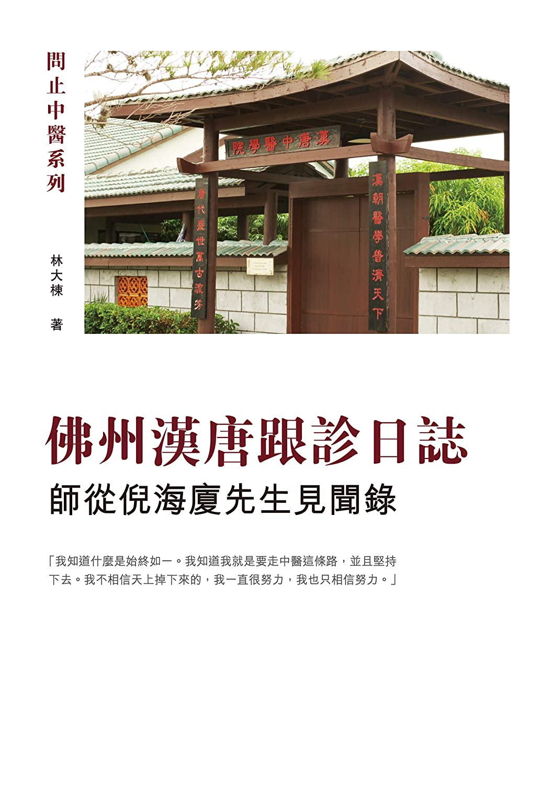

佛州漢唐跟診日誌：師從倪海廈先生見聞錄

「我知道什麼是始終如一。我知道我就是要走中醫這條路，並且堅持下去。我不相信天上掉下來的，我一直很努力，我也只相信努力。」
作者將他在十多年前去美國佛羅里達州跟診倪海廈先生的種種見聞做了詳細而精彩的記錄。
本書記錄了倪師以中醫對治白血病、漸凍人、尿毒癥、肺癌等各類重症的諸多心法重點，呈現了倪師對中醫治證及傳承的深度思考，其中更有倪師關於中醫電腦輔助診療的構思。跟隨作者的文字，我們仿佛也體會到跟診倪師時全面學習中醫並探討生命真相的快樂，好像親身經歷了與志同道合者在佛州漢唐同修的精神盛宴。
學貫古今、醫之大者的倪師帶領著作者和讀者去探索中醫的正法，這一切，都發生在那海天交會間的熱帶島嶼上，那裏進行著原屬神州大地的古老醫學的演示發揚。佛州小島上，有象徵人類現代科技力量的太空梭發射場，也有探索中醫本真的倪師漢唐中醫學院。諸多不可思議之因緣交錯，成就了這本難得的佳作。
本書特色
這不只是一本普通日誌－－
作者將自身跟診名醫的所見所聞，寫成詳細筆記；其中更有名醫親授的多年心得功法！
診間內喜怒哀樂、智慧積累，且看十年前的桃花島上發生過什麼令人神往的事！
|